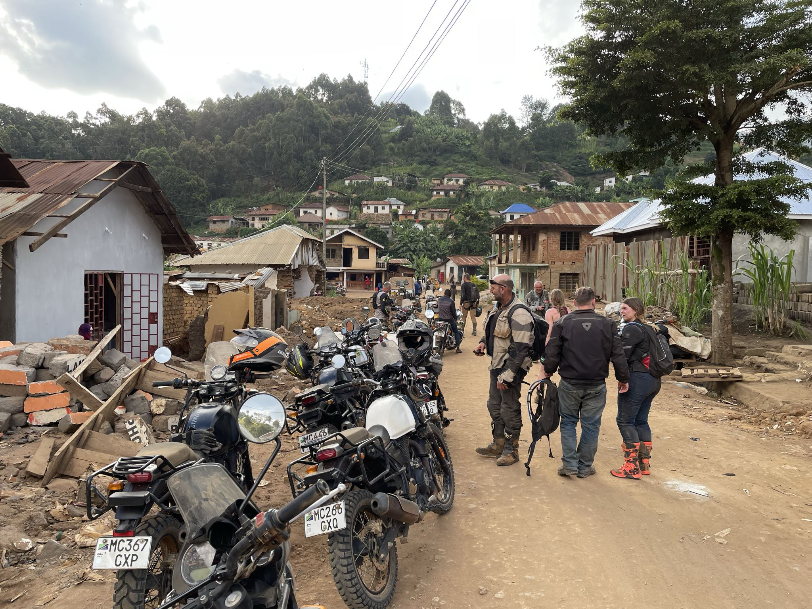

Turen blev kørt på den fantastiske bjergged, Royal Enfield Himalayan. Med mine 189cm var det en lidt krampagtig oplevelse at stå i stigbøjlerne, men den lille motorcykel klarede det fantastisk og var en solid arbejdshest på hele turen, alle 9 deltagere var meget imponerede over maskinen fra dag 1 og der var ingen udfordringer med mekanikken på trods af talrige styrt med høj hastighed
